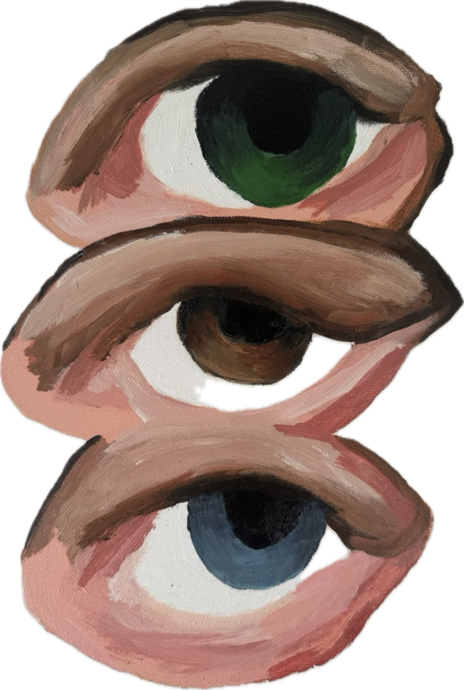

01 / ABOUT
Eu sou feita de intensidade.
Nunca soube viver pela metade.
Gosto do que provoca, do que desloca e do que faz sentir. Talvez por isso minha trajetória sempre tenha acontecido no encontro entre mundos aparentemente diferentes: a sensibilidade e a estratégia, a criação e os negócios, a tradição e a vontade de fazer diferente.
Talvez por isso eu tenha me formado em Fashion Design, em Milão. Porque sempre enxerguei a moda como uma forma de linguagem — uma maneira de contar histórias sem precisar dizer uma palavra. Mais tarde, fui para a Administração. Queria entender o outro lado da criação: como uma ideia ganha estrutura, atravessa o tempo e se transforma em algo maior do que ela mesma.
Mas existe uma parte de mim que antecede tudo isso: a curiosidade por entender quem somos.
Sou apaixonada por desenvolvimento humano e autoconhecimento. Já passei por diferentes retiros, cursos e experiências, e encontro no estoicismo, no espiritismo e no universo simbólico e espiritual diferentes caminhos para olhar para dentro. Tenho uma relação especial com pedras, rituais e tudo aquilo que carrega significado.
Ler é uma das minhas formas preferidas de me atravessar. Entre tantos assuntos, relações humanas sempre me fascinaram — porque acredito que o encontro com o outro também funciona como um espelho: revela partes nossas que, sozinhos, talvez demorássemos muito mais para enxergar.
